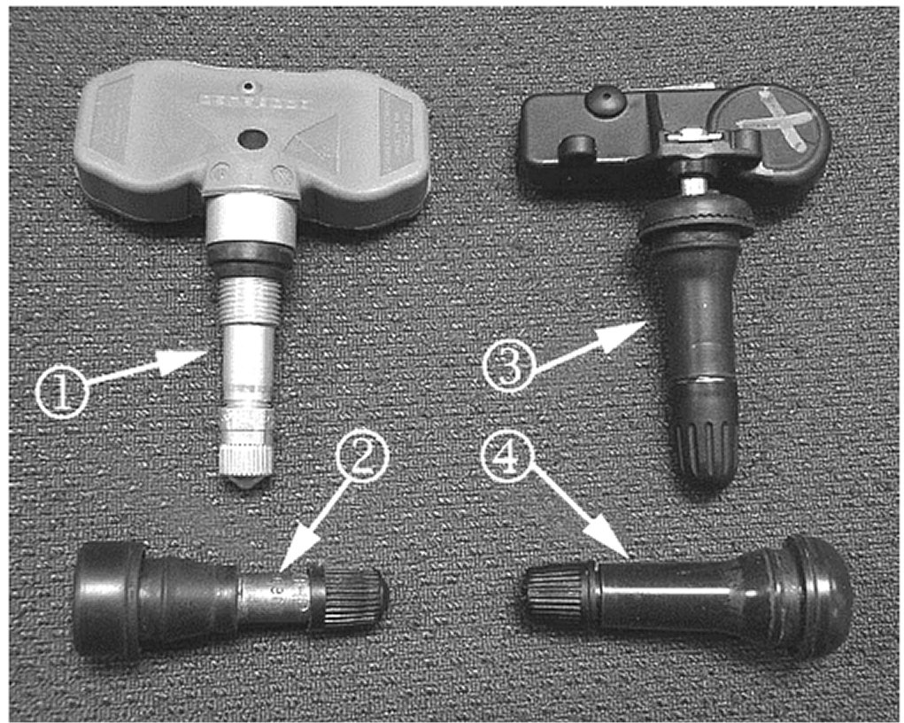

Tire Pressure Monitor - Recongizing/Avoiding Damage
Bulletin No.: 06-03-16-003Date: December 06, 2006
INFORMATION
Subject:
Information on Recognizing Tire Pressure Monitoring (TPM) Equipped Vehicles/Avoiding Damage to TPM Systems During Tire/Wheel Service and New Replaceable TPM Sensor Valve Stems
Models:
2007 Cadillac Escalade, Escalade ESV, Escalade EXT
2007 Chevrolet Avalanche, Silverado, Suburban, Tahoe
2007 GMC Sierra, Yukon, Yukon Denali, Yukon XL, Yukon Denali XL
The above vehicles have adopted a new style of on-wheel TPM sensor. The full-size utilities changed over to the new sensor, identifiable by black rubber valve stems, during October 2006. This style of sensor no longer has the attaching nut visible on the outside of the wheel.
Do not try to pull out the valve stems to deflate the tire. The sensor will be damaged by this action.
Recommendations / Instructions

Refer to the picture shown to help identify the various valve stem types you may encounter.
The TPM sensor (1) has a metal non-replaceable valve stem secured by an external nut.
The valve stem (2) is a traditional heavy duty brass bodied stem.
The TPM sensor (3) is equipped with the new rubber coated stem. The stem and retaining screw can be replaced with P/N 15263240. When this sensor and stem are in the installed position, you can identify the new sensor by the following characteristics:
A valve stem cap that is longer than most on the market, which reveals a longer than normal amount of brass when the cap is removed. A valve that feels thicker than most on the market.
The valve stem (4) is a traditional, common standard duty valve stem.
Spare tires DO NOT come equipped with TPM monitors.
Valve Stem Replacement
The replacement interval on the revised TPM sensor with replaceable stem is the same as for any other traditional valve stem. Replace the stem at the time of tire replacement, or whenever air seepage is suspected at the valve stem. When replacing the valve stem, tighten the screw to 1.3 N.m (11.5 lb in).
DO NOT replace the entire TPM assembly. ONLY replace the stem during a tire changing event.
Parts Information

Disclaimer